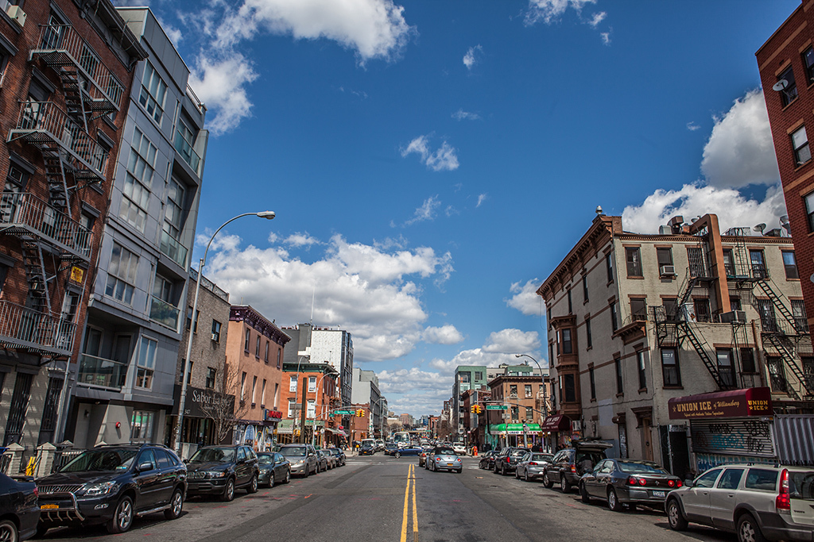

Hello! My name is shi wen huang. I was born in China, but I have called Brooklyn and New York my home for the past 18 years.
To be honest, despite having lived in Brooklyn for 18 years, it is not exactly my favorite place in the world. If I had to choose one place to live in for the rest of my life, it would be Manhattan. Prior to college, Chinatown and certain parts of Brooklyn (Sunset Park, 8th Ave), were my favorite areas to hang out in. But in the past few years, not particularly because of college, but because of everything I’ve experienced since college, including college, I have found Manhattan to be very... I don’t know, endearing? Manhattan may not always be fond of me, but I certainly am quite fond of it.